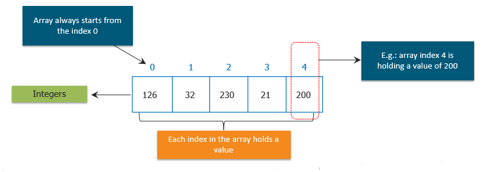
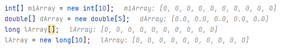
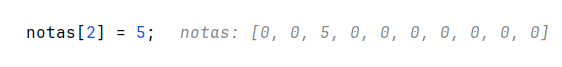
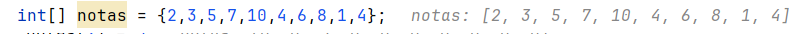
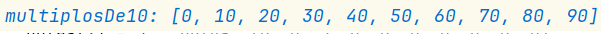
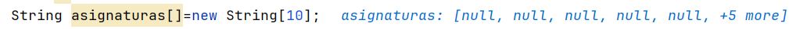
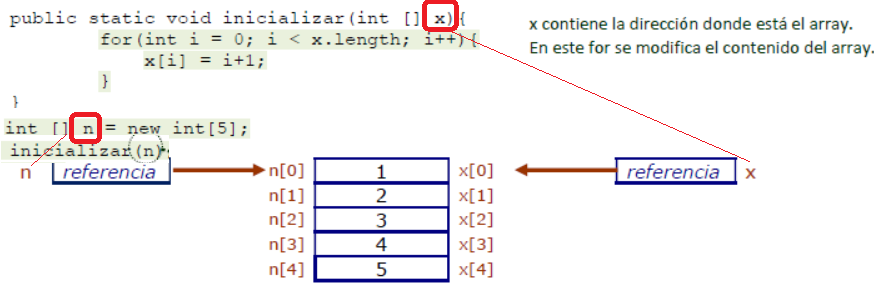

Arrays de datos primitivos¶

Los arrays es una estructura de datos que te permite almacenar una secuencia de valores todos del mismo tipo.
Un array está hecho de bloques contiguos de memoria que se divide en varias celdas. Cada celda tiene un valor y todos los valores son del mismo tipo. A veces, las celdas de un array se denominan slots. En el array de la imagen cada celda contiene un int.
En el ejemplo de la imagen hemos creado un array de enteros. También se podría crear un array de caracteres, de String, etc. Esto se podría hacer tanto para tipos de datos primitivos como para objetos.
- Las celdas están numeradas secuencialmente empezando por cero.
- Si hay N celdas en un array, entonces los índices van del 0 hasta N-1.
- La longitud de un array es el número de celdas.
Al valor almacenado en la celda de un array se le suele llamar elemento.
Es muy importante tener en cuenta que los arrays empiezan siempre en la posición cero. Por tanto, si se desea acceder al primer elemento del array, estará almacenado en la posición 0.
Declaración y reseva de memoria¶
Para declarar un array, se hace de la misma forma que haríamos si quisiéramos declarar una variable pero añadiendo [ ]:
int miVariable; //declaramos una variable normal
int[] miArray; //declaramos una variable array
int miArray2[];//es equivalente al anterior
Si usamos la declaración tipo[] arrayName crea una referencia a una variable de tipo de array, pero no construye el objeto.
Los arrays en Java se crean como objetos, y como cualquier otro objeto en Java, para construirlo utilizamos la palabra reservada new. Para inicializar un array usaremos la palabra new + tipo de dato + tamaño del array entre corchetes[]:
int[] miArray = new int[10]; //creamos y reservamos memoria para el array con 10 elementos
// y valores 0 en cada posición
double[] dArray = new double[5];
long lArray[];
lArray = new long[10];
Una vez ha sido construido no es posible cambiar su tamaño. La variable miArray va a ser un array con espacio para 10 elementos de tipo entero. Inicialmente con valores a 0

Acceso a los elementos del array¶
Para guardar un valor dentro de una celda del array tenemos que acceder a su posición dentro del array.
int[] notas = new int[10];
notas[2] = 5; //guardamos en la posición 2 del array el valor 5

Warning
Recuerda que los elementos del array empiezan con índice 0, por tanto, en realidad la posición 2 sería la 3.
Para acceder a un valor de una determinada posición del array y mostrarlo lo haríamos de la siguiente forma:
int notaBasesDatos = notas[2]; //almacenamos el valor 5 en la variable entera elemento
System.out.println(notaBasesDatos);
// o también podemos hacer directamente
System.out.println(notas[2]);
Inicialización del array¶
Hay varias formas de inicializar un array. Por ejemplo, si quisiéramos darle valor a todas las posiciones del array podríamos hacerlo de la forma:
notas[0] = 2;
notas[1] = 3;
notas[2] = 5;
....
notas[10] = 9;
Lo cual es una forma muy pesada y tediosa. Java nos ofrece otras formas de inicializar los arrays en una sola línea de código que solo es aplicable a la vez que definimos la variable:
int[] notas = {2,3,5,7,10,4,6,8,1,4};//correcto
//no puedo inicializar el array después de haberlo creado
//esto da ERROR
notas = {2,3,5,7,10,4,6,8,1,4};
De esa forma, también le indicamos indirectamente el tamaño del array. Java cuenta el número de elementos que hay entre {} y crea un array de ese tamaño y además los asigna en posiciones consecutivas dentro del array.

Los índices en un array son enteros que especifican la posición que ocupa el elemento dentro del array. Por tanto podemos manejar los índices con variables enteras.
Una tercera forma sería utilizando la estructura de bucle for, para esto, debemos saber con antelación el valor de los elementos del array:
int[] multiplosDe10 = new int[10];
for(int i = 0; i < 10; i++) {
multiplosDe10[i] = i * 10;
}
Lo que hacemos es inicializar cada posición del array utilizando el bucle. Estamos almacenando dentro del array el valor del índice multiplicado por 10, de forma que tendremos, {0, 10, 20, ...., 90}.

La estructura for también es de gran ayuda si queremos imprimir los valores que están guardados en cada posición del array:
for(int i = 0; i < 10; i++) {
System.out.println("Elemento " + i + " valor " + miArray[i]);
}
Scanner sc = new Scanner(System.in);
for(int i = 0; i < 10; i++) {
System.out.println("Introduzca la nota " + i + ": ");
notas[i]=sc.nextInt();
}
A falta de cualquier otra información, las celdas de un array se inicializan con el valor predeterminado para su tipo. Cada celda de un array de tipo numérico se inicializa a cero.
Y cada celda de un array de referencias a objetos se inicializa en nulo (null).

Longitud del array¶
Una buena práctica, es utilizar una propiedad integrada dentro de array, en vez de hardcodear literales de tamaño dentro del bucle. Esta propiedad es length:
Scanner sc = new Scanner(System.in);
for(int i = 0; i < notas.length; i++) {
System.out.println("Introduzca la nota " + i + ": ");
notas[i]=sc.nextInt();
}
Si ahora cambiamos la longitud del array en su definición, no se vería afectado ningún bucle o lugar donde se utilizara notas.length
Pasar un array como argumento en un método¶
Al igual que hacíamos con las variables simples, también podemos pasar arrays a los métodos.
public static void imprimirArray(int[] array) {
for(int i = 0; i < array.length; i++) {
System.out.println("Elemento " + i + " valor " + array[i]);
}
}
public static void main() {
int[] miArray = {1, 3, 5, 6, 8};
imprimirArray(miArray);
}
Warning
Recuerda que un array es un objeto y se envía una referencia a la instancia en la llamada al método, por lo que los cambios sufridos en el array dentro del método, se verán reflejados al salir del método

Devolver un array en un método¶
Para devolver un objeto de tipo array en un método simplemente añadiremos []:
public static int[] calcular() {
int[] miArray = new int[10];
//....realizo calculos con el array
return miArray;
}
public static void main() {
//me devuelve el array creado en el método
int[] resultados = calcular();
//...
}
Caso práctico real uso de un array¶
Vamos a presentar un ejemplo de un caso real para el que los arrays son muy efectivos. Por ejemplo pedir al usuario que inserte números y mostrar la media de los números insertados.
/**
* La clase Notas, lee las notas de n alumnos y devuelve la media
*/
public class Notas {
private static Scanner sc = new Scanner(System.in);
public static void main(String[] args) {
int totalAlumnos;
System.out.println("Introduzca en número de alumnos");
//tamaño de array
totalAlumnos=sc.nextInt();
//El método nos devuelve un array con las notas de los alumnos
int[] notas1DAM_FOL = leerNotas(totalAlumnos);
//imprimimos los valores
for (int i = 0; i < notas1DAM_FOL.length; i++) {
System.out.println("La nota del alumno " + i + ": " + notas1DAM_FOL[i]);
}
System.out.println("La media de los alumnos de FOL es: " + calcularMedia(notas1DAM_FOL));
}
/**
* Recibe el total de alumnos y deuuelve un array con las notas de los
* alumnos
* @param totalAlumnos: total de los alumnos
* @return array de tamaño totalAlumnos con las notas de los alumnos
*/
public static int[] leerNotas(int totalAlumnos) {
//creamos el array
int[] notas = new int[totalAlumnos];
//leemos las valores
for (int i = 0; i < notas.length; i++) {
System.out.println("Introduzca la Nota del alumno " + i + ": ");
notas[i] = sc.nextInt();
}
return notas;
}
/**
* Recibe un array de entereos y calcula su media y la devuelve
* @param notas: array de enteros con la notas
* @return: media de las notas de los alumnos
*/
public static double calcularMedia(int[] notas) {
int suma = 0;
for (int i = 0; i < notas.length; i++) {
suma += notas[i];
}
return (double) suma / (double) notas.length;
}
}